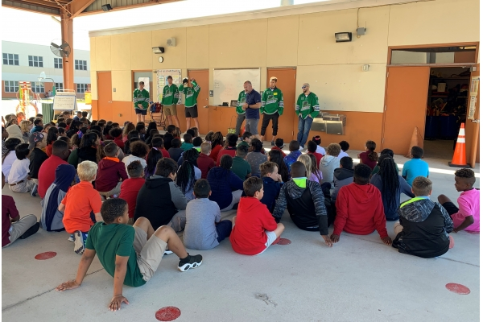
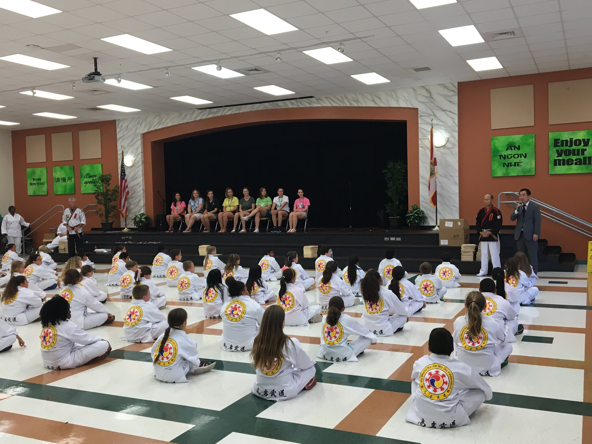

Campus Life

physical education grounds
The Physical Education Grounds (or P.E. pavillion) is the part of the school that teaches kids how to play sports. The grounds includes a running track, a basketball court, and a field for football, soccer, volleyball, and ect.

auditorium
The auditorium is used to annonce things that are inportant to the school, and used to be a place for taekwondo.
School News
FSA Testing Weeks
FSA (Florida Standard Asessment) Testing
I would be quiet if I was you. Don't disturb the students.
Last day of school is comming quick

Last day of school is comming quick
Last day of school is comming quick. Hope your child coming out with lots of knowledge